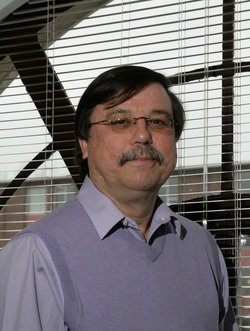

Dr. John Mateja

SIUE is thrilled to announce that Dr. John Mateja has agreed to serve as the 2013 STLAURS keynote speaker!
John is an experimental nuclear physicist with research interests in the area of light heavy-ion reactions.
After earning B.S and Ph.D. degrees at the University of Notre Dame in 1972 and 1976, he was a post-doctoral
research associate at Florida State University. In 1978, he became a member of the physics faculty at
Tennessee Technological University where he developed one of the first federally-funded research programs
in the nation to involve physics undergraduates in research. In 1988, he joined the Argonne National
Laboratory staff where he oversaw the laboratory's college outreach programs. In 1994 he joined the staff
at DOE headquarters to help establish the Department's new EPSCoR program. John was appointed Dean of the
College of Science at Murray State University in 1998. During his tenure as Dean, the College successfully
competed for a Howard Hughes Medical Institute award, NSF Collaborative Research at Undergraduate
Institutions award, NSF Course, Curriculum and Laboratory Improvement grants, and NSF Experimental Program
to Stimulate Competitive Research award. He was the founding Director of MSU's Undergraduate Research and
Scholarly Activity Office and today serves as the Director of MSU's McNair Scholars Program. From
2008 - 2010, John served as a Program Officer in the Division of Undergraduate Education at the National
Science Foundation. He has been the President of the Council on Undergraduate Research, a Governor for the
National Conference on Undergraduate Research (NCUR) and the Chair of the American Physical Society's Committee
on Education. He is a Fellow of the Council on Undergraduate Research and of the American Physical Society.